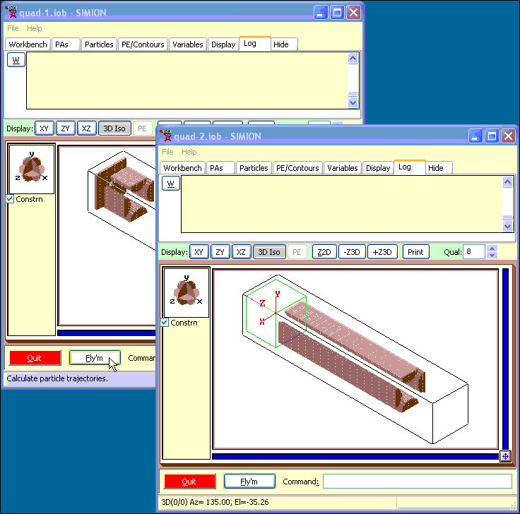

Purpose
This examples illustrates how to teleport particles between PAs running on different SIMION processes (instances of simion.exe in memory) that communicate.
This provides one method of simulating huge systems that don't fit onto a single SIMION process or computer. We can somewhat overcome this limit by running multiple SIMION processes on different computers connected over a network.
NOTE: This is an advanced example in Lua coding.
Description
This particular example is adapted from the quadrupole ("quad") example on SIMION. Here, the quadrupole simulation is split into three arrays, as before, but these three arrays are divided among two ion optics workbenches (IOBs). Two arrays (entrance and exit) are in quad-1.iob, which is loaded on the first SIMION process (process 1). A third array (center rods) is in quad-2.iob, which is loaded on the second SIMION process (process 2). The workbench Lua code teleports[1] ions from one process to another when ions move between potential array instances.
Some additional empty PA instances (blank2d.pa) are placed at the entraces and exits of the main PAs solely to detect when a particle should change between PA instances--i.e. a particle enters a location in which there is a PA instance in another SIMION process. These PAs are small and consume a trivial amount of memory. They are also placed at the lowest priority level in the PA instance list on the PAs tab in View.
The two IOB files, quad-1.iob and quad-2.iob, each have corresponding particle definitions, quad-1.fly2 and quad-2.fly2, and corresponding workbench user programs, quad-1.lua and quad-2.lua. The FLY2 files are identical (quad-2.fly2 actually imports from quad-1.fly2, so changing quad-1.fly2 automatically changes quad-2.fly2 if the latter is reloaded). The quad-1.lua and quad-2.lua programs are also near identical (differing only in SIMION process number), and quad-2.lua imports almost all its code from quad-1.lua. quad-1.lua in turn imports teleportutil.lua, which implements the bulk of the particle teleportation code. teleportutil.lua can be reused in your own simulations. teleportutil.lua in turn imports from a third-party LuaSocket[3] library (under the "lib" subdirectory), which provides general support for communicating via TCP/IP sockets, so that the SIMION processes can communicate and transfer particle data.
The SIMION processes can run on the same computer or on different computers on the network. By default, they are configured to run on the same computer (the "localhost" IP address "127.0.0.1" refers to the current computer). You can modify the IP addresses and TCP ports so that the SIMION processes will run on different computers. IP address numbers are specific to your particular computers.
Firewall Warning: If running the SIMION processes on different computers, beware of firewalls (e.g. Windows XP/Vista Personal Firewall) since these can inferfere with the communication unless the required ports are opened on the firewall. A personal firewall may even interfere with SIMION processes running on the same computer.
For more details of this example, refer to the extensive comments in the source code: quad-1.iob and teleportutil.lua.
Files in this Demo:
- README.html - Description of example
- quad-1.iob - SIMION workbench for first SIMION process.
- quad-2.iob - SIMION workbench for second SIMION process.
- quad-1.lua/quad-2.lua - SIMION workbench Lua programs for first and second IOB's respectively.
- quad-1.fly2/quad-2.fly2 - Particle definitions for first and second IOB's respectively (functionally identical).
- quadin.pa* - entrance PA
- quadout.pa* - exit PA
- quad.pa* - center rods PA
- blank2d.pa - small empty PA for particle teleportation
- lib - LuaSocket (TCP/IP sockets) library for Lua
Usage
How to run quad demo:
- 1. Load quad-1.iob and quad-2.iob in two instances of SIMION. (Start up one instance of SIMION, click View on main screen and select the quad-1.iob file. Start up a second instance of SIMION on the same computer, click View on main screen and select the quad-2.iob file.)
- 2. If this is your first time using the example, you will be asked to refine (confirm that and press Refine).
- 3. Start flying quad-1.iob first and quad-2.iob second (In quad-1.iob, click Fly'm. Then in quad-2.iob, click Fly'm.) It is important that the two processes are started in this order; otherwise, communication will fail. Note how the particles start at the entrace optics in the first SIMION process, then fly through the middle rods in the second SIMION process, and finally fly through the exit optics in the first SIMION process. Note how the Log window shows when particle are teleported and the states the particles move through. Compare also trajectories to the original SIMION "quad" example that runs in a single process (note the nodal points in the trajectories and how they are affected by the TQual number).
See Also
- [1] Wikipedia: Teleportation - original definition of the word
- [2] Example: Quadrupole -- quadrupole mass filter example upon which this example is based.
- [3] LuaSocket - TCP/IP sockets library for Lua (used internally by teleportutil.lua)
Screenshots

Source
2008-03, D.Manura, PA files apapted from the QUAD example by Dahl.